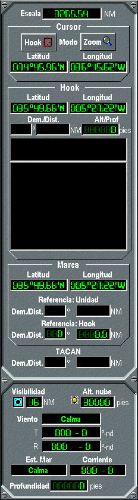
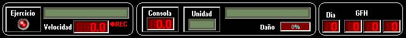
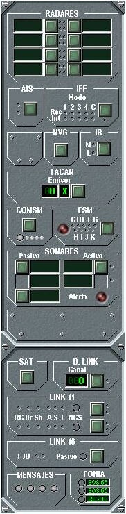
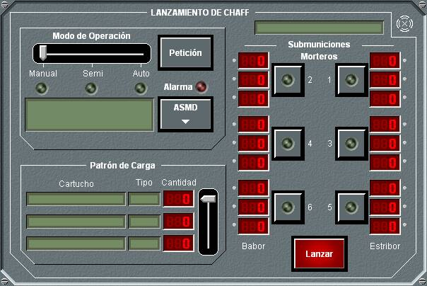

Consola de Alumno
La Consola de Alumno le proporciona la información del entorno obtenida de los sistemas de detección de su buque, y controles para gobernar la unidad. El Alumno podrá analizar esta información y dar las órdenes adecuadas para el cumplimiento de su misión.
Las Consolas de Alumnos están compuestas por una Pantalla Táctica (monitor superior), y una Pantalla de Control (monitor inferior). Sobre la Pantalla Táctica se presenta de forma continua la Situación Táctica, sobre una cartografía digital y con simbología NTDS o STANAG-4420. En la Pantalla de Control se presentan de forma permanente Paneles Resumen del estado de la unidad y de todos sus equipos. Actuando sobre la pantalla táctil, el operador puede acceder de forma directa a los Paneles de Detalle de cada uno de los equipos de la unidad y actuar sobre los mismos.
En el siguiente esquema se identifican las diferentes áreas que componen el interface de operador de las dos pantallas de la Consola de Alumno:

En la siguiente captura de las dos pantallas de la Consola de Alumno se pueden observar las diferentes áreas identificadas en el esquema.

Pantalla Táctica
La Pantalla Táctica, situada en el monitor superior, incluye la Presentación Táctica y el Área de Información Táctica.

Presentación Táctica:
Consiste en la presentación gráfica de la Situación Táctica que observa la unidad. Esta presentación se realiza mediante una cartografía digital sobre la que se muestran, con simbología NTDS o STANAG-4420 (ver Anexos – Simbología), los contactos obtenidos por el conjunto de sensores de la unidad y/o recibidos mediante sus comunicaciones.
El origen de los datos digitales de la presentación gráfica del escenario táctico puede ser S-57, VPF y se muestran siguiendo las recomendaciones para los sistemas ECDIS (Electronic Chart Display and Information System) en cuanto a la presentación de objetos. Sobre la carta se muestran también los objetos gráficos Rutas, Áreas y Puntos de distintos tipos que hayan sido incorporados al escenario durante la Preparación.
Para facilitar una visión sinóptica de la situación táctica, los contactos son mostrados con vector velocidad y etiqueta descriptiva.
Mediante la barra de menú de la Pantalla Táctica, el Alumno puede acceder a diversa funcionalidad asociada a la Presentación Táctica, por ejemplo:
- Imprimir Presentación Táctica
- Ver Presentación Táctica a pantalla completa
- Seleccionar movimiento absoluto o relativo
- Ver etiqueta extendida de las trazas
- Seleccionar simbología STANAG 4420 o NTDS y tamaño de símbolos
- Seleccionar modo de uso del cursor (Hook, Zoom, ...)
- Acceder a la herramienta de dibujos libres
- Presentar anillos distancia, líneas de marcación o líneas de medición o cortinas
- Presentar puntos de historia
- Presentar sectores de armas, sensores o interferidos
- Presentar cálculos de CPA, Posición Futura o Interceptación
- Acceder a la edición de trazas
- Establecer filtros de presentación
Área de Información Táctica:
En esta área fundamentalmente se presenta de forma permanente la siguiente información:
Carta de Referencia:
 Este área mostrará una visión simplificada del escenario con la que el usuario podrá situar geográficamente bien una vista de la Región de Juego dentro de una carta del mundo o bien una vista de la región visualizada según el centrado y zoom dentro de la carta presentada, según la opción elegida.
Este área mostrará una visión simplificada del escenario con la que el usuario podrá situar geográficamente bien una vista de la Región de Juego dentro de una carta del mundo o bien una vista de la región visualizada según el centrado y zoom dentro de la carta presentada, según la opción elegida.
Información táctica:

Escala seleccionada en la Presentación Táctica
Botones para establecer el Cursor en Modo Hook o Modo Zoom.
Latitud y Longitud de la Unidad Propia.
Datos de Hook:
Posición del Hook.
Demora / Distancia del Hook a la Unidad Propia.
Área de Datos del contacto / unidad en Hook:
Se muestra de forma abreviada:
Categoría / Identidad / Ampliación Identidad
Tipo / Numeral / Clase
Datos cinemáticos
Otra información de los contacto
según tipo de sensores que lo detectan
Datos de Marca:
Posición de la Marca.
Demora / Distancia de la Marca a la Unidad Propia.
Demora / Distancia de la Marca al Hook.
Demora / Distancia del TACAN
Datos Ambientales:
Visibilidad.
Altura de las Nubes.
Dirección del Viento.
Estado de la Mar / Intensidad del Viento.
Profundidad.
Profundidad de Capa.
Pantalla de Control
En la Pantalla de Control, situada en el monitor inferior, se presentan de forma permanente Indicadores Generales y Paneles Resumen del estado de la unidad y de todos sus equipos. Actuando sobre la pantalla táctil, el operador puede acceder de forma directa a los Paneles de Detalle de cada uno de los equipos y actuar sobre los mismos.
En la parte inferior de la pantalla de Control del Instructor se muestra la Barra de Acceso Rápido, que da acceso una lista de mensajes de eventos del sistema y al envío de mensajes de texto a otras consolas.

Indicadores Generales:

En esta área se muestra al alumno información general del Ejercicio y de la Unidad, consistente en:
- Estado del ejercicio, indicado por led (Rojo: detenido, verde: ejecutándose)
- Nombre del ejercicio
- Velocidad de ejecución del ejercicio, con dos dígitos enteros y un decimal.
- Número de la consola.
- Numeral y nombre de la unidad bajo control.
- Bando al que pertenece la unidad, indicado por su color (Rojo, Azul o Blanco).
- Porcentaje de daño infringido a la unidad (0 a 100%)
- Grupo fecha hora del ejercicio.
Paneles Resumen:

En los Paneles Resumen de la unidad se le muestra al Alumno la información básica de cada uno de los equipos de los que dispone.
En general, la información mínima que se le muestra es el nombre del equipo, su estado, la munición remanente para el caso de las armas, y las opciones de configuración más relevantes de cada equipo.
Toda esta información, se muestra mediante conjuntos de LED con distintos significados dependientes del color con el que lucen. Por ejemplo, los LEDs de estado tienen el siguiente significado en general:
 ON
ON
 OFF / STAND BY ON
OFF / STAND BY ON
 STAND BY OFF
STAND BY OFF
 DAÑADO
DAÑADO
 Equipo no presente
Equipo no presente
Pulsando sobre cualquier zona de los paneles resumen se accede a los paneles de detalle correspondientes.
Paneles de Detalle:
Mediante los Paneles de Detalles el Alumno puede acceder a toda la información de cada uno de los equipos así como todos los controles necesarios para llevar a cabo todas las acciones asociadas a las mismas: encendido, apagado, configuración, disparos, etc..
Normalmente se accede a un Panel de Detalle Principal para cada uno de los equipos, y a través de éste se abren otros subpaneles para llevar a cabo acciones como Disparos, Lanzamientos, etc..
A modo de ejemplo podemos ver el Panel de Detalle de Lanzamiento de Chaff:
